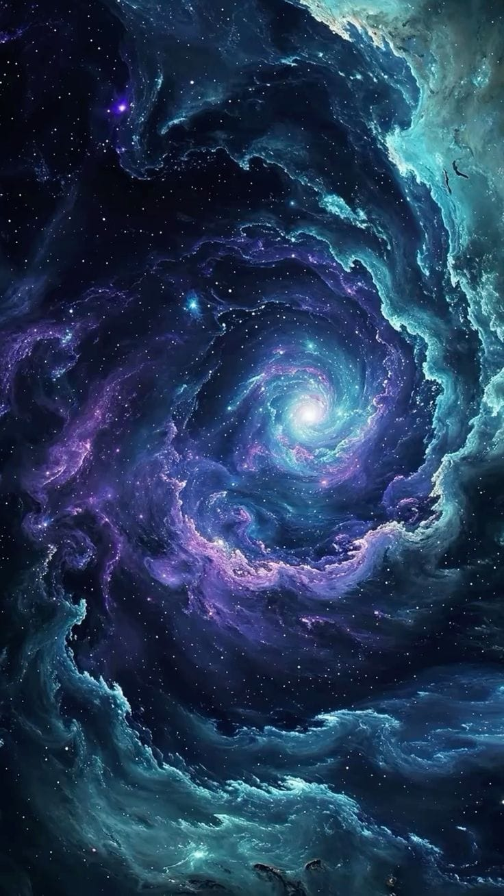

Un universo lleno de colores
El espacio es un lugar inmenso y fascinante, lleno de estrellas, planetas, galaxias y nubes de gas y polvo cósmico.
¿Qué es el universo?
El universo es todo lo que existe: el espacio, el tiempo, la materia y la energía. En él se encuentran millones de galaxias, estrellas, planetas y otros cuerpos celestes.
🌌 Introducción al universo
El universo es un lugar inmenso y fascinante que contiene todo lo que existe, como el espacio, el tiempo, la materia y la energía. En él encontramos estrellas, planetas, satélites, cometas y muchos otros cuerpos celestes que hacen del cosmos un lugar lleno de misterios.
Entre sus maravillas se encuentran las galaxias, enormes agrupaciones de estrellas, gas y polvo cósmico, y las nebulosas, grandes nubes de gas y polvo que pueden ser lugares donde nacen nuevas estrellas. Estos elementos nos ayudan a comprender mejor cómo funciona y evoluciona el universo.
A través de la astronomía podemos explorar estos increíbles objetos, descubrir sus características y conocer un poco más sobre el lugar que ocupamos en el cosmos.